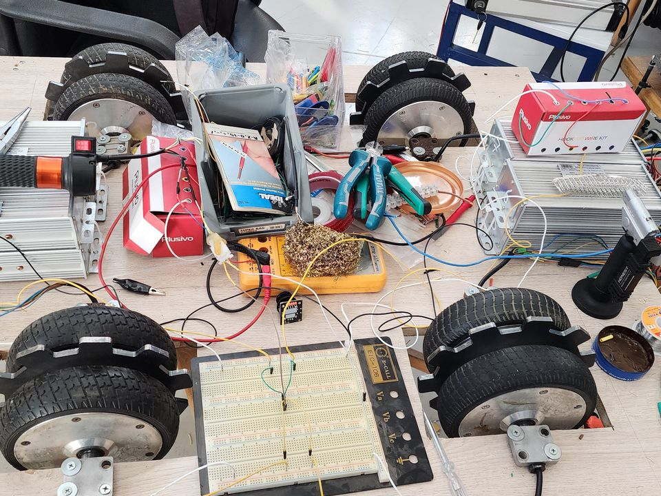

Autonomous Platforms Lab (APL), JUST
Sole engineer on a four-corner tracked ground platform for a 350 kg payload, inside a ten-member lab.
- Drivetrain from BLDC hub motors salvaged from hoverboards, paired back to back at each corner to double the drive torque.
- Custom sprockets designed and CNC-machined to carry rubber tracks between the paired wheels.
- Chassis modelled in SolidWorks, 17 parts, around standard steel tube so it only needs cutting and welding.
- Wiring harness built by hand. Joystick differential mixing on an Arduino, proven on a four-LED test rig before the drivetrain was powered.
- Exhibited at AIDTSEC 2023. The project stopped when external funding ended, with drivetrain, wiring and control complete.